Il logo, i colori, i caratteri, il sito e i social di Bagnarino Coworking: cosa significano e come lavorano insieme per portarti clienti.
Per Marcella Bagnarino
Il sito è online e il marchio Bagnarino ha un volto nuovo. In queste pagine ti mostriamo cosa racconta il logo, i colori e i caratteri che lo accompagnano, e come appare oggi il sito, dal telefono e dal computer.
Siamo partiti da quello che nessun altro in città ha: un negozio vero in corso Lamarmora dal 1983, concessionario Olivetti. Carta, inchiostro, scrivanie di legno. È la tua storia, e oggi è il tuo vantaggio.
Alexander Fania
Federico Delfino
02Il logo, pezzo per pezzo
03Il logo, ovunque
04I colori
05I caratteri
06Il sito dal telefono
07Il sito dal computer
08Le sezioni che fanno prenotare
09I social
10Inquadra e apri il sito
bagnarinocoworking.itInquadra per aprire il sito
01
APEX MEDIA02 · Il logo
02
Il logo, pezzo per pezzo
Una B che racconta tutto il negozio.
Il segno sembra semplice, ed è voluto: deve funzionare grande sull’insegna e minuscolo nell’icona di Google. Ma ogni parte ha un significato, legato alla storia di Bagnarino.
123456
1
Il blocco in alto: il negozio
Il pezzo più compatto è Bagnarino dal 1983: macchine per l’ufficio, assistenza, la fiducia di quarant’anni. Sta sopra, come le radici stanno all’origine di tutto.
2
La riga d’ocra: il punto d’incontro
È la riga su cui batte la macchina per scrivere e il divisorio tra due scrivanie. Unisce negozio e coworking. La sua punta si alza appena, come un foglio che esce dal rullo.
3
Il blocco in basso: il coworking
È più largo e pesante di quello sopra: il coworking è la parte nuova che cresce, la base solida su cui si appoggia il futuro del negozio.
4
Il lato dritto: il margine del foglio
A sinistra la B è tagliata dritta, come il bordo di un foglio o il dorso di un raccoglitore. Comunica ordine e precisione, da ufficio vero.
5
Le curve: l’accoglienza
A destra le forme diventano tonde e morbide. È il lato umano: Marcella che ti accoglie al banco, il posto dove ti senti a casa.
6
Gli spazi bianchi: le postazioni
I tre pezzi non si toccano mai. Ognuno ha il suo spazio, come ogni scrivania ha il suo: si lavora vicini, ma ognuno concentrato.
Il nome e la firma
“Bagnarino” è scritto con un carattere moderno e pulito, figlio della grafica d’ufficio che Olivetti ha reso famosa: si legge al volo, anche piccolo.
Sotto, spaziata come una targa, la firma “Coworking · dal 1983”. Quarant’anni in centro sono una garanzia che nessun altro coworking di Alessandria può scrivere: per questo il logo la porta sempre con sé.
bagnarinocoworking.itApex Media · per Bagnarino S.r.l.
02
APEX MEDIA03 · Il logo
03
Il logo, ovunque
Chiaro, scuro, piccolissimo: sempre riconoscibile.
Il logo esiste in quattro versioni, tutte disegnate sulle stesse misure. Così resta identico e nitido sull’insegna, sul sito, sul telefono e sulla card in tasca.
Su carta · la versione principale
Su inchiostro · fasce scure e social
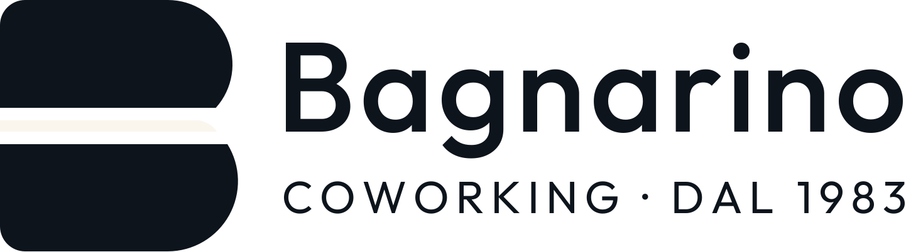
Su ocra · per le occasioni speciali
Solo la B · quando lo spazio è poco
Disegnata a righello
La B è costruita su una griglia: i due blocchi hanno quasi la stessa altezza (A), quello in basso è appena più largo (A+) per dare stabilità, come nelle lettere stampate a piombo.
La riga d’ocra è sottile un decimo dei blocchi: abbastanza per vedersi anche in piccolo, mai così grossa da diventare un terzo pezzo.
Google e browser
L’icona accanto al nome del sito nei risultati di ricerca.
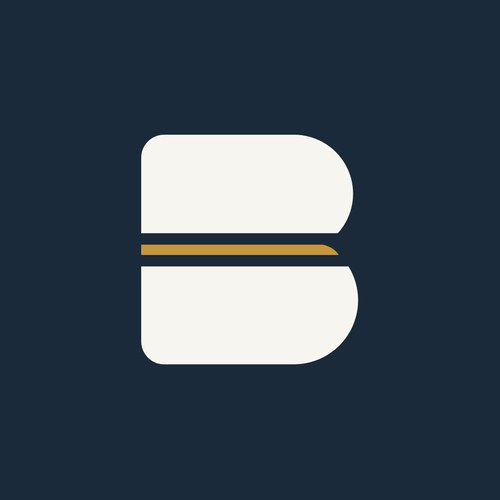
Instagram e Facebook
La foto profilo: tonda, leggibile anche a 1 cm.
Schermata del telefono
Chi salva il sito lo apre come un’app.
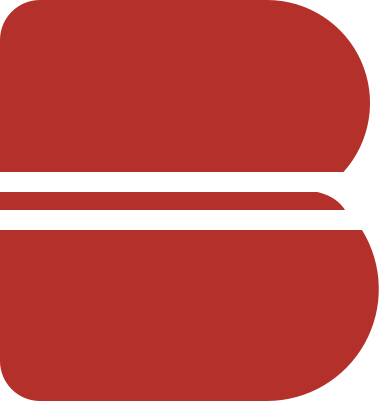
Il timbro della card
La B diventa il timbro: uno per ogni giornata.
bagnarinocoworking.itApex Media · per Bagnarino S.r.l.
03
APEX MEDIA04 · I colori
04
I colori
Inchiostro, ottone e carta.
Tre colori presi dal negozio, usati sempre e solo questi. Così un post di Bagnarino si riconosce prima ancora di leggerlo, anche scorrendo veloce Instagram.
Blu inchiostro
#1B2A3A
L’inchiostro della macchina per scrivere e della penna con cui si firma un contratto. Ricorda gli uffici Olivetti e la calma di chi lavora concentrato. Comunica fiducia.
Fasce scure · testi · logo
Ocra
#C9973B
L’ottone delle vecchie macchine e la luce del pomeriggio in corso Lamarmora. Ha un compito solo: l’azione. Ogni “Prenota” è ocra, e l’occhio lo trova subito.
Pulsanti · riga del logo
Carta
#F4EEE3
Il colore del foglio, non il bianco freddo di un ufficio. Fa sembrare il sito stampato, riposa gli occhi e lascia parlare le foto.
Sfondi · schede
Un colore per ogni formula
Ogni formula ha il suo colore, uguale sul sito, nella prenotazione e sui social. Chi vede il post del mese flessibile lo ritrova identico quando prenota: niente da cercare.
Giornata
€25
Il primo passo: caldo, leggero, senza impegno.
Carnet 10 ingressi
€200
Il verde del risparmio, per chi torna spesso.
Mese flessibile
€270
Blu con bordo ocra: la più conveniente, quella da spingere.
Postazione fissa
€320
Petrolio: stabile, la tua scrivania di sempre.
bagnarinocoworking.itApex Media · per Bagnarino S.r.l.
04
APEX MEDIA05 · I caratteri
05
I caratteri
Tre voci, una sola personalità.
I caratteri sono il tono di voce scritto. Ne usiamo tre, ognuno con un compito preciso: così il sito sembra uscito da una tipografia, non fatto in serie.
Titoli e prezziFraunces
Coworking in centro, da €25 al giorno.
Aa Bb Cc Dd Ee Ff Gg 0123456789 Aa Bb Cc
Un carattere con le grazie, come le insegne dei negozi storici e i libri ben stampati: dà classe e calma. Il corsivo ocra mette in risalto la parte che conta, spesso il prezzo o la promessa.
Testi e pulsantiHanken Grotesk
Scrivania, wi-fi in fibra e stampe incluse. Prenoti in 30 secondi.
Prenota una scrivania →
Pulito e leggibilissimo, anche piccolo dal telefono. È la voce che spiega e che fa cliccare.
Etichette e orariIBM Plex Mono
LUN–VEN 9:30–18:30 CORSO LAMARMORA 46 TOTALE GIORNATA €25
Le lettere tutte larghe uguali della macchina per scrivere e dello scontrino. Per orari, indirizzi e dettagli “da ufficio”.
bagnarinocoworking.itApex Media · per Bagnarino S.r.l.
05
APEX MEDIA06 · Il sito
06
Il sito, dal telefono
Pensato per il pollice, non per lo schermo grande.
Più di 8 clienti su 10 arrivano dal telefono, da Google o da Instagram. Ogni pagina è disegnata prima per lo smartphone, con “Prenota” sempre a portata di pollice nella barra in basso.
1L’apertura. Prezzo, posti liberi di oggi e pulsante ocra visibili senza scorrere.
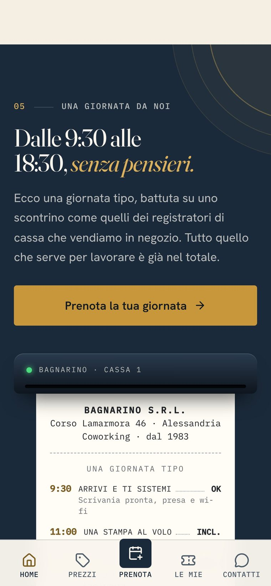
2Lo scontrino. La giornata tipo battuta come alla cassa del negozio: totale €25.
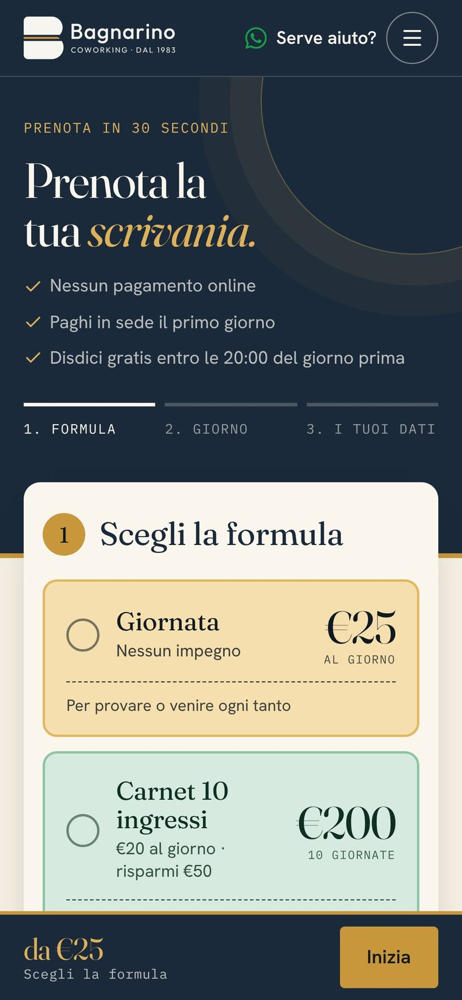
3La formula. Quattro scelte colorate, una tocca e si passa al giorno.
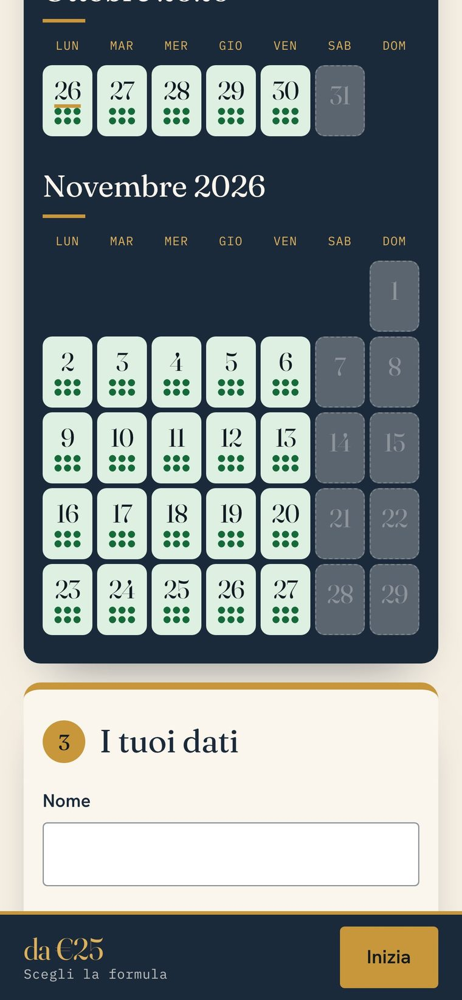
4Il calendario. Ogni pallino è una scrivania: verde libera, gialla ultimi posti.
30 sec
Formula, giorno, dati. Nessun pagamento online: si paga in negozio.
1 tocco
WhatsApp e telefono in ogni pagina, per chi preferisce scriverti.
0 attese
Niente programmi pesanti: si apre in un attimo anche in 4G.
bagnarinocoworking.itProvalo ora dal telefono
06
APEX MEDIA07 · Il sito
07
Il sito, dal computer
Una pagina che cambia ritmo mentre scendi.
La home alterna fasce blu e fasce color carta, con schede che galleggiano sopra la sezione dopo. Nessuna sezione è uguale a quella prima: l’occhio resta sveglio fino al pulsante finale.
bagnarinocoworking.it
1L’apertura. Titolo grande, la foto della sala, quattro fatti in basso: dal 1983, concessionario Olivetti, 6 scrivanie, orari. In alto a destra “Prenota”, sempre visibile.
2Il listino. Quattro card con il loro colore; il mese flessibile sporge e ha il timbro “la più conveniente”.
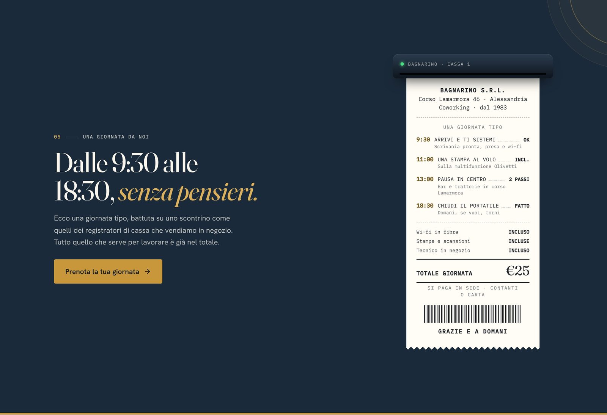
3La giornata tipo. Uno scontrino del registratore di cassa: dalle 9:30 alle 18:30, tutto incluso.
bagnarinocoworking.itApex Media · per Bagnarino S.r.l.
07
APEX MEDIA08 · Il sito
08
Le sezioni che fanno prenotare
Ogni sezione risponde a un dubbio del cliente.
“Com’è il posto?”, “Conviene tornare?”, “Fa per me?”. Il sito risponde nell’ordine in cui il cliente se lo chiede, e alla fine di ogni risposta c’è un pulsante.
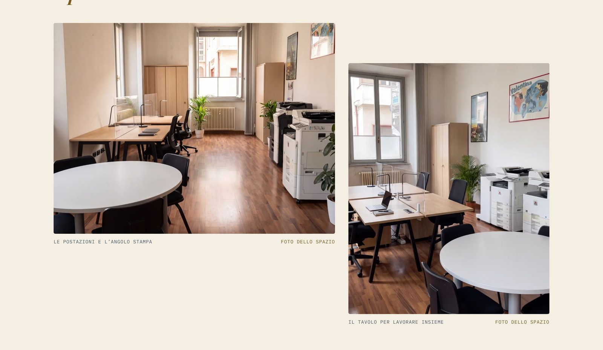
1“Com’è il posto?” Le foto vere della sala e dell’angolo stampa, poi i servizi inclusi a icone: wi-fi in fibra, presa, stampe, tecnico in negozio. Niente sorprese.
2“Conviene tornare?” La Bagnarino Card: una tessera di cartoncino con i timbri rossi della B. Ogni 10 giornate, l’undicesima è in regalo.
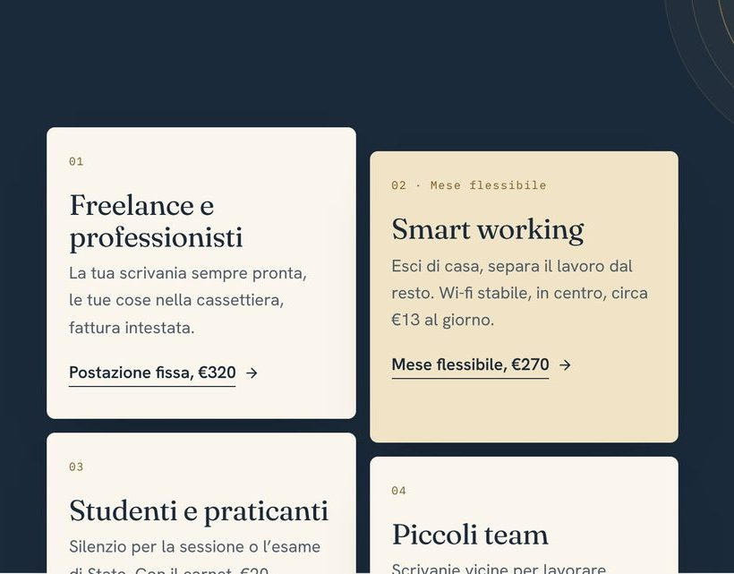
3“Fa per me?” Freelance, smart worker, studenti, piccoli team: ogni scheda porta dritta alla formula giusta.
bagnarinocoworking.itApex Media · per Bagnarino S.r.l.
08
APEX MEDIA09 · I social
09
I social
Lo stesso Bagnarino, anche su Instagram.
I quattro post di lancio usano gli stessi colori, caratteri e prezzi del sito: chi passa da Instagram al sito si sente già a casa. Ogni post ha un solo messaggio e un’azione chiara.
L’annuncio. “Il tuo nuovo ufficio è in centro”, da €25 al giorno.
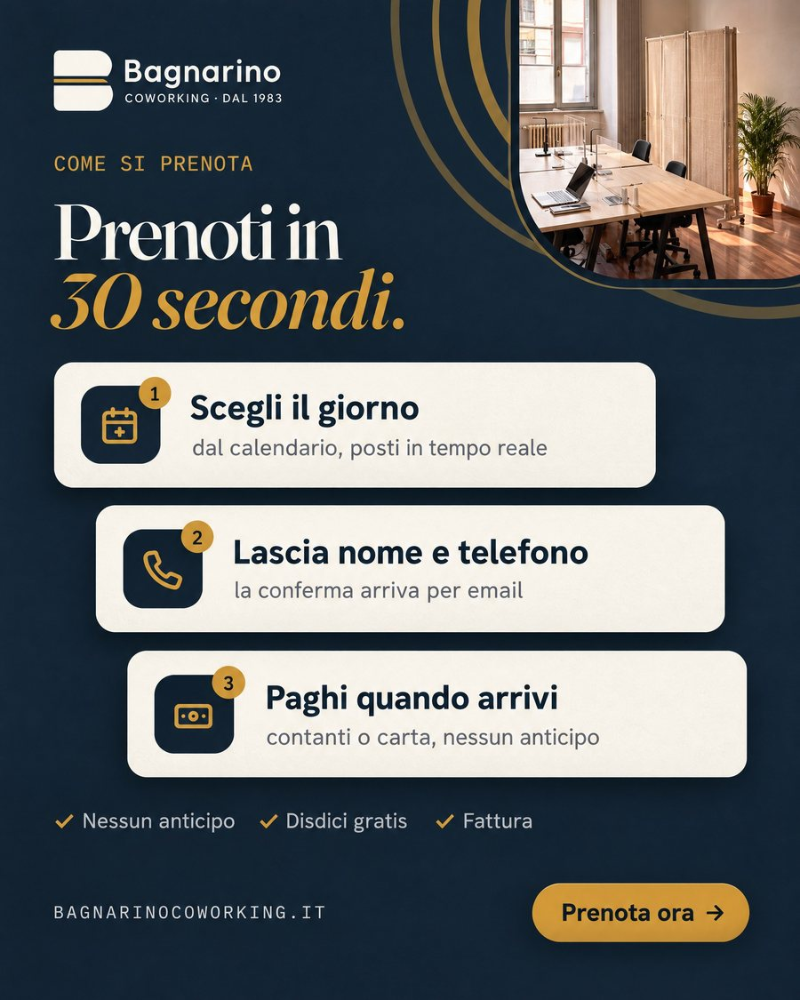
Come si prenota. Tre passi, nessun anticipo.
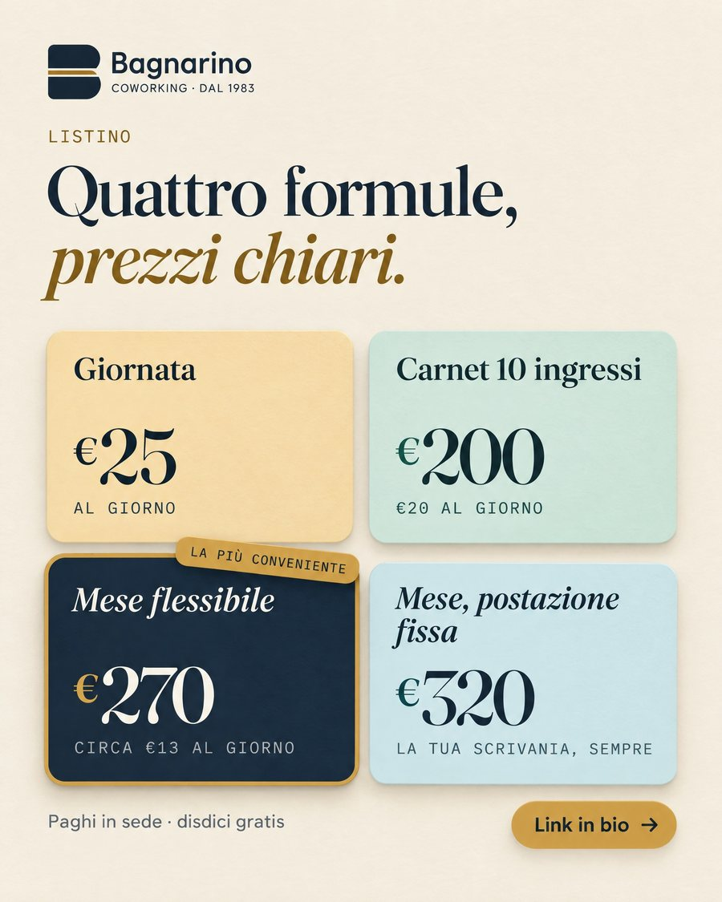
Il listino. Le quattro formule con i loro colori.
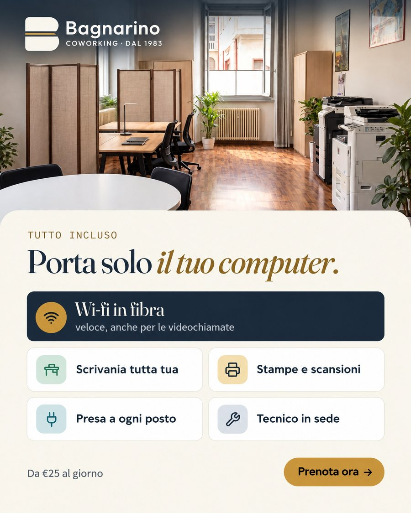
Tutto incluso. “Porta solo il tuo computer.”
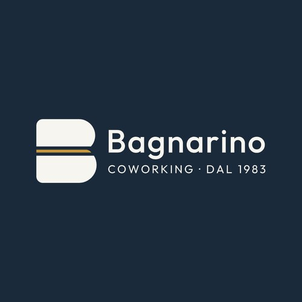
Le foto profilo
Due versioni su blu inchiostro: il logo intero per Facebook e Google, solo la B per Instagram e TikTok, dove il cerchio è minuscolo.
Il tono di voce
Diretto come un commesso di fiducia, caldo come un negozio di quartiere.
Diamo del “tu”, frasi brevi, parole semplici. Ogni testo risponde a una domanda del cliente: quanto costa, quando posso venire, come prenoto.
desk
scrivania
day pass
giornata
book now
prenota
Niente inglese da startup: le parole del negozio, quelle che i clienti usano già.
bagnarinocoworking.itApex Media · per Bagnarino S.r.l.
09
APEX MEDIA10 · Il sito è online
10
Il sito è online
Inquadra e prova a prenotare.
Apri la fotocamera del telefono e inquadra il codice: si apre il sito di Bagnarino Coworking. Fai una prenotazione di prova, in 30 secondi vedi quello che vedranno i tuoi clienti.
bagnarinocoworking.it
IndirizzoCorso Lamarmora 46 Alessandria
OrariLun–Ven 9:30–18:30
WhatsApp347 224 9457
Da€25 al giorno
Il marchio è pronto. Il sito è online. Da oggi lavorano per te.
Alexander Fania
Federico Delfino
APEX MEDIA
351 594 0685 studio@infoapex.eu
Apex MediaPerformance marketing agency · per Bagnarino S.r.l.
 Alexander Fania
Alexander Fania Federico Delfino
Federico Delfino